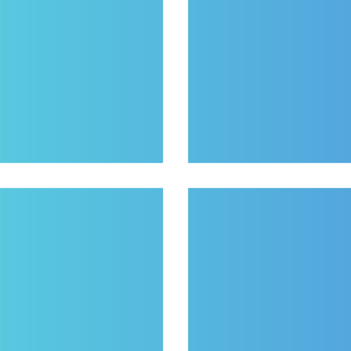
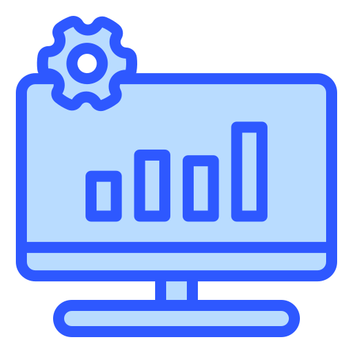
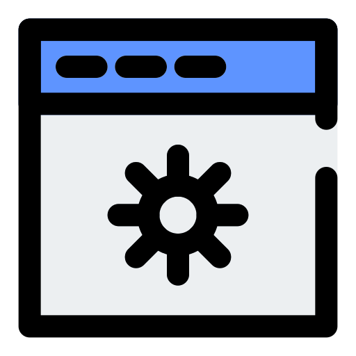
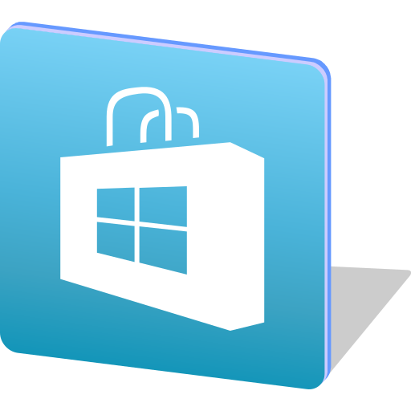
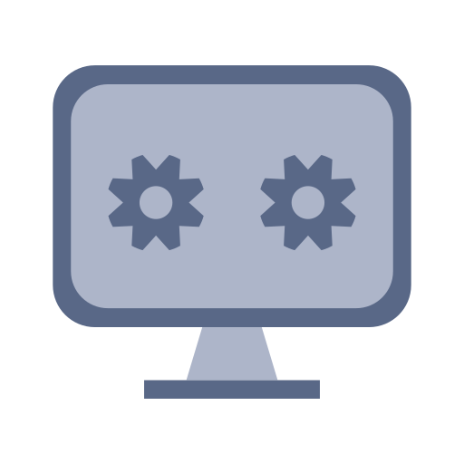

Назад
Назад





Windows — это проприетарная графическая операционная система, разработанная и продаваемая компанией Microsoft. Она является самой популярной операционной системой для персональных компьютеров.
Windows 11 24H2 - Ежегодное обновление с новыми функциями и улучшениями
Windows 11 получает регулярные ежемесячные обновления безопасности и функциональные обновления раз в год. Проверьте наличие обновлений в Параметрах → Центр обновления Windows.